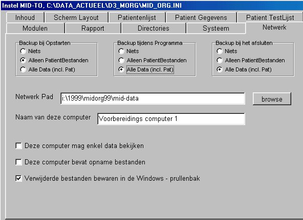
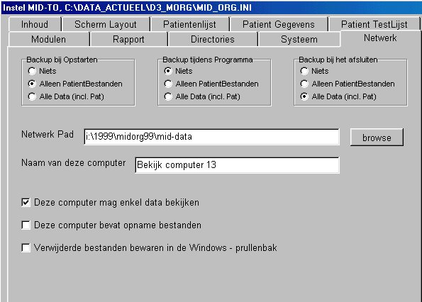

Netwerk support
De MID-TestOrganizer ondersteunt netwerk faciliteiten, ten behoeve van de volgende doelstellingen:
Door een uitgekiend uitwisselings-protocol tussen PC's en netwerk, is het ook mogelijk de netwerk-faciliteiten te benutten tijdens opnamen, zelfs als de netwerk-communicatie niet altijd even betrouwbaar is.
De enige essentiële eis is dat alle PC's die meedoen een juiste datum en tijd-instelling hebben (binnen enkele minuten gelijk). Daarom oppassen met niet-legale software, sommige (gekraakte) illegale software pakketten passen datum en tijd (tijdelijk) aan.
Test-protocollen worden niet via het netwerk bijgehouden, omdat het enerzijds semi-statische informatie betreft en anderzijds omdat hier teveel risico's aan verbonden zijn.
Data-synchronisatie tussen meerdere PC's 
Iedere PC die meedoet in het netwerk moet worden ingesteld op de specifieke taken die deze PC moet uitvoeren. Met name de schrijfbevoegdheid en de momenten waarop netwerk-uitwisseling moeten plaatsvinden, moeten correct worden ingesteld.
Het data-gebruik op meerdere PC's kan het beste worden uitgelegd aan de hand van een concreet voorbeeld.
Een typische opstelling zou er als volgt uit kunnen zien:
A = 1 PC voor voorbereiding ( analyse / rapportage )
B = 3 PC's voor het maken van de feitelijke patiëntopnamen
C = 2 PC's voor bekijken / analyse / rapportage
A = PC voor voorbereiding ( analyse / rapportage )
Deze PC is als volgt ingesteld: schrijfbevoegdheid en het updaten van gewijzigde data naar het netwerk zo snel mogelijk.
Verder wordt op deze computer geen data bewaard (mag wel).

B = PC voor het maken van de feitelijke patiëntopnamen
Deze PC is als volgt ingesteld: schrijfbevoegdheid en het updaten van gewijzigde data naar het netwerk zo snel mogelijk.
Verder wordt op deze computer geen data bewaard (mag wel).
C = PC voor bekijken / analyse / rapportage
Deze PC is als volgt ingesteld: GEEN schrijfbevoegdheid en een beperkte update faciliteit aan het begin en eind van het programma.
Verder wordt op deze computer geen data bewaard (mag wel).

|
Parameter |
Omschrijving, advies |
|
BackUp bij Opstarten |
Geeft aan wat er uitgewisseld moet worden tussen deze PC en het aangesloten netwerk, op het moment dat de MID-TestOrganizer wordt opgestart. Er kan gekozen worden uit de volgende mogelijkheden niets alleen patientbestanden (dus niet de grote databestanden) alle data (inclusief de patientbestanden) In het algemeen kan hier voor "alleen PatientBestanden" worden gekozen. Wil men snel opstarten, dan kan voor "niets" worden gekozen. Wil men continue over alle data op de locale PC beschikken (bijvoorbeeld om vervolgens de PC van het netwerk los te koppelen dan kan men "alle data" kiezen. Het is echter beter om dit dan bij het afsluiten te doen. |
|
BackUp tijdens Programma |
Geeft aan wat er uitgewisseld moet worden tussen deze PC en het aangesloten netwerk, tijdens het programma. Het belangrijkste moment waarop updating plaatsvindt is het selecteren van een andere patient. In het algemeen kan hier voor alle dat worden gekozen, omdat slechts 1 patient gelijktijdig wordt geupdate. |
|
BackUp bij het afsluiten |
Geeft aan wat er uitgewisseld moet worden tussen deze PC en het aangesloten netwerk, op het moment dat de MID-TestOrganizer wordt afgesloten. In het algemeen is het hier verstandig voor "alle data" te kiezen, ook bij ReadOnly Systemen. Bij Read-Only systemen wordt namelijk gezorgd dat de data-bestanden evenyueel gewist worden. Als bij ReadOnly systemen alle data reeds in het begin wordt geupdate, mag hier ook niets worden geselecteerd. |
|
Netwerk Pad |
Het volledige basispath van het netwerk (met of zonder laatste backslash). Als het path niet bestaat, wordt het zonodig aangemaakt, als dit om welke reden niet kan (b.v. geen schrijfbevoegdheid op de netwerk drive), worden geen backup acties uitgevoerd. |
|
Naam van deze Computer |
Dit moet een unieke naam zijn, zodat op het netwerk bijgehouden kan worden welke PC wat aan het doen is. In het algemeen wordt geadviseerd hier zelf niets in te vullen, de MID-TestOrganizer zoekt als default-waarde namelijk het nummer van de eerste harde schijf (en dat is uniek). Soms is dit nummer echter niet te achterhalen, dan handmatig een unieke tekstregel invoeren. |
|
Mag enkel data bekijken |
Als deze schakelaar aan staat, is het een zogenaamde readonly-PC. Wat er ook gewijzigd wordt op deze PC, er wordt niets naar het netwerk getransporteerd. |
|
Bevat opname bestanden |
Als deze schakelaar aan staat, worden de opname bestanden bij het afsluiten verwijderd, tenminste als backup bij sluiten niet op "niets" staat. |
|
Verwijderde bestanden bewaren in prullenbak |
Als een Master-PC geen opnamen-bestanden moet bevatten, dan worden bij het afsluiten van de MID-TestOrganizer (als backup bij sluiten niet op "niets" staat) alle databestanden van deze PC verwijderd (uiteraard na een eventuele update naar het netwerk). Meestal moet deze schakelaar uitgezet worden, daar anders de windows-prullenbak snel vol zal geraken. Alleen als het MID-TestOrganizer net is ingesteld, is het raadzaam om deze schakelaar tijdelijk aan te zetten. |